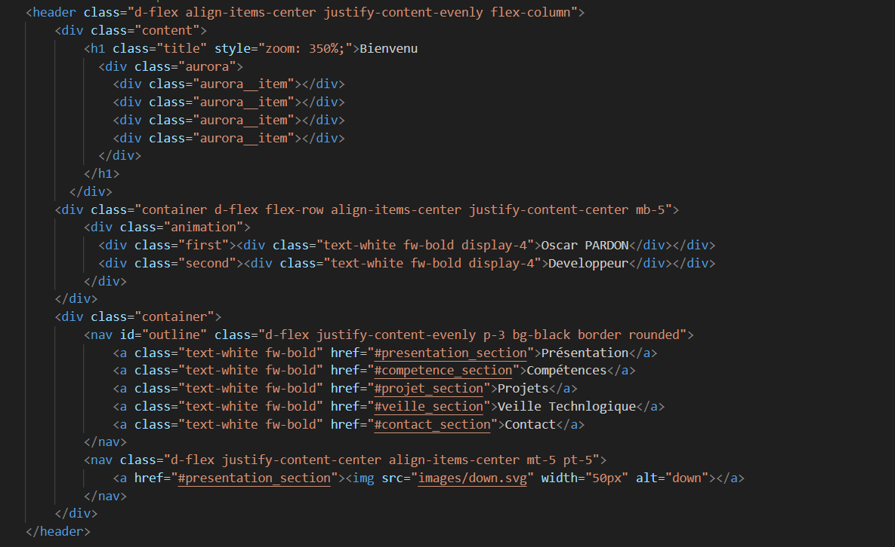

J’ai créé ce présent portfolio afin de renforcer ma présence en ligne. Il a pour objectif de me présenter, ainsi que mes compétences et mes projets. Sa conception, réalisée en HTML et CSS avec l'appui de Bootstrap, m’a permis de mettre en pratique certaines notions de développement web que j’utilise peu habituellement, notamment en matière de SEO.
Extrait de code du portfollio">